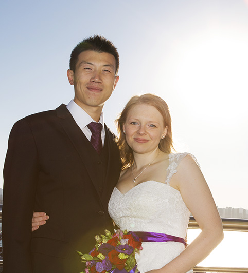
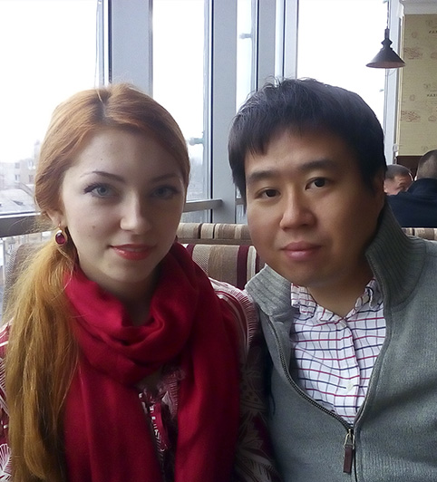

ЧТО ПРЕДЛАГАЕТ НАШЕ АГЕНТСТВО
Сегодня, стало очень трудно просто достойно жить, но, куда ещё труднее стало найти достойного мужчину, который будет любить и заботиться о вас. В такие трудные дни, наше международное брачное агентство, предлагает уникальную возможность решить все проблемы раз и навсегда.
Проблема с которой сталкивается каждая
У некоторых из вас подруги уже начинают жениться, а у некоторых уже начинают разводится. Кто-то вышел замуж за Колю из соседнего подъезда, кто-то за Антона, с которым училась вместе, кто-то за Марка бухгалтера в компании, но на кого ни посмотришь – примеры их семейной жизни как-то не вдохновляют. Растягивание семейного бюджета от аванса до зарплаты, отсутствие отдельного жилья, постоянная нехватка времени для собственных дел и друг для друга, то есть полное отсутствие романтики и настоящих ощущений. И вы начинаете понимать, что эта жизнь – не для вас, что вы не хотите, выйдя замуж, превращать каждый свой новый день в борьбу за выживание. Зачем вам все эти проблемы, если вы всего лишь хотели себе верного, любящего и заботливого мужа без материальных проблем? Многие могут сказать, что иметь такого мужа – это роскошь. Но, мы уверены, что это не так. И у каждой женщины есть возможность сделать совершенно иной выбор и изменить свою жизнь.
Что же делать дальше?
Чтобы найти достойного мужчину нужно просто расширить сферу своего поиска. Глупо ограничивать свой выбор только из друзей или близких знакомых, так как найдя похожего мужчину как у всех подружек, жизнь будет тоже как у всех подружек – без спокойствия и гармонии в душе. Именно поэтому необходимо найти мужчину из совершенно другого мира. Сегодня, благодаря Интернету расстояния между людьми значительно сократились, и воспользовавшись этой отличной возможностью, каждая сможет найти мужчину, который станет прекрасным мужем. Выйти замуж за иностранца – это не сказка, а вполне осуществимая цель, если к её реализации правильно подойти. Во-первых, крайне необходимо позволить мужчинам узнать о вас, во-вторых, отфильтровать мужчин с неблагородными намерениями. И как раз с такими задачами помогают наши профессионалы, которые имея богатый опыт и разбираясь в своём деле лучше всех, всегда могут подсказать, что надо делать. От вас же необходимо всего лишь правильно заполнить анкету и начать своё путешествие в поисках свой любви уже сегодня.
ЗарегистрироватьсяОТЗЫВЫ НАШИХ НЕВЕСТ
Что о нас говорят клиенты

От всей души хочу сказать огромное спасибо агентству за вашу помощь в поиске моей любви! Мне очень понравилось, как работа самого агентства, так и отношение менеджеров ко мне. Так же порадовало, что все услуги были бесплатными и не пришлось самой заниматься вопросами оформления документов для переезда. Но самое главное, что благодаря агентству я встретила того самого, кого я искала!
Екатерина, 28 лет, г. Киев
В Украине меня ничего не держало, поэтому решила искать мужаза границей. Я очень довольна тем, что обратилась именно в это агентство,так как познакомилась с прекрасным мужчиной, который вернул мне верувнастоящую любовь и сделал меня по-настоящему счастливой. Спасибо Вам!
Марина, 37 лет, г. Запорожье
Сначала мне не верилось, что я смогу решиться уехатьЯпонию и жить там. Но все оказалось куда проще после того, как я там побывалапервый раз. Сейчас я хожу на курсы японского языка и готовлюсь к свадьбе.очень рада, что обратилась именно в это агентство! Вы лучшие!
Любовь, 22 года, г. Харьков
5 ПРИЧИН ВЫБРАТЬ НАШЕ АГЕНТСТВО
Самый простой способ стать счастливой
Ваше счастье — Наше счастье
Наше брачное агентство является лидером на украинском рынке по оказанию услуг для знакомства и заключению браков украинок с японцами. Обладая высокими навыками поиска и благодаря индивидуальному подходу к каждому клиенту, мы смогли добиться нашей высокой и репутации свести сердца многих клиентов.
Начните новый путь вместе с нами
Мы истинно убеждены в том, что помогаем нашим клиентам найти новый путь к ихнему счастью. Всем известно, что найти подходящего себе партнёра это не простая задача, а партнёра из другой страны, ещё сложнее. Именно для преодоления таких сложностей существуем мы. Большой опыт и высокий профессионализм наших специалистов, поможет каждому начать новый путь с лёгкостью и в радости.
Стабильность, надёжность, доверие
Только за 2015 год наша команда помогла более чем 10 парам найти друг друга на этой большой планете. Удивительно, но факт, что все семейные пары, познакомившиеся через наше агентство, по сей час живут вместе и в гармонии. Наша команда ориентирована не на числа в отчётах, а на счастливые улыбки наших клиентов.
Высокий профессионализм
Брачное агентство «TOKIO» входит в тройку лучших агентств Украины. Профессионализм работников и хорошая репутация, всегда была залогом нашего успеха. Не все брачные агентства готовы до конца быть открытыми и честно вести диалог со своими клиентами. Ориентируясь на достижение цели клиента, прежде всего мы стараемся быть открытыми и честными в своей работе. Мы всегда уверены, что вы будете довольны нашей работой, а самое главное — результатом.
Полная конфиденциальность
Вся переданная вами конфиденциальная информация хранится на специально защищённых серверах в Европе. Ваша информация не может быть раскрыта никому без вашего разрешения. Так же, мы не публикуем вашу информацию на просторах стран СНГ, и вы можете быть спокойны, что ваша анкета не попадёт на глаза вашим коллегам или знакомым.
Последние наши пары
Счастливые истории о любви
-

13 Марта 2016
ТАТЬЯНА & ХИДЭТО
Этой прекрасной паре было достаточно всего лишь пару месяцев переписки и одной беседы по Skype, чтобы понять, что они нашли друг друга. После этого Хидэто сразу же решил пригласить Татьяну к себе в Токио
-

26 Февраля 2016
АННА & КАДЗУКИ
Кадзуки и Анна сразу нашли общий язык. Их объединила любовь к музыке и искусству. Паре понадобилось всего одна встреча, чтобы больше никогда не расставаться. Сейчас пара празднует свою вторую годовщину и переезжает в Лос-Анджелес.
-

4 Декабря 2015
ИРИНА & ТОМОХИРО
Ирине писало много мужчин, но интересами она сошлась только с Томохиро, который так же, как и она увлекался скалолазанием. Сейчас они живут в г. Фукуи и ждут рождение дочки.